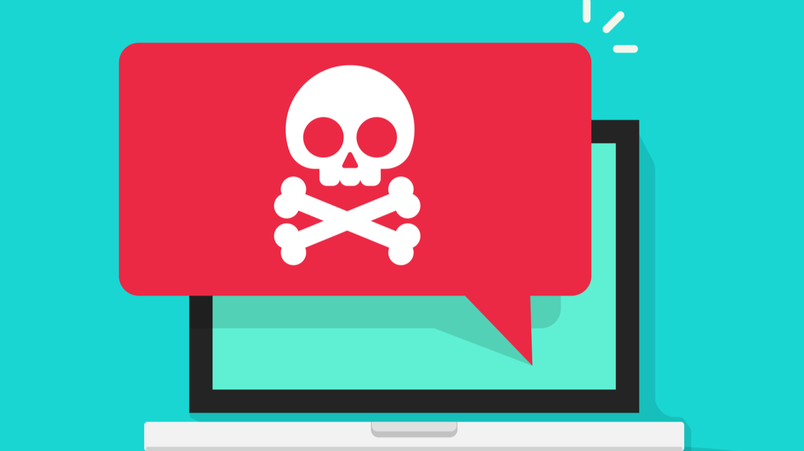

Becsapós programok - Nem minden az, aminek látszik
Az internet elterjedésével egyre gyakoribbá váltak a kártékony,
viszont magunkat hasznosnak állító programok terjedése.
Ezek a szoftverek, valamilyen egyszerű feladatot próbálnak a lehető
legegyszerűbben implementálni, úgy hogy a felhasználónak ne legyen fogalma
arról, hogy közben a program árt neki.
Ilyen programok kifejezetten veszélyesek azok számára, akiknek nincsen meg
a szükséges informatikai ismerete ahhoz, hogy megállapítsa a szoftverről,
hogy hamis.
A leggyakoribb esetekben a program vírusírtónak, vagy vírusvédelmi
eszköznek adja ki magát.
Viszont az ilyen programokról azt fontos tudni,
hogy speciális jogosultságokat kell megadnia a rendszergazdának a használatukhoz.
Éppen e miatt nagyon egyszerű különböző erőforrásokat elérnie a szoftvernek, mivel maga
a felhasználó tette ezt számára lehetségessé.
Fontos megjegyezni, hogy pont e miatt más vírusírtók
is nehezen tudnak fellépni az ilyen programok ellen.
Az alábbi lista a legismertebb rosszindulatú biztonsági szoftvereket tartalmazza:
List of rogue security software - Wikipedia

Egy másik réteg, amit ezek a szoftverek céloznak, azok a gyerekek.
Ha egy alkalmazás színes
és csábító egy gyermek számára, nem fog habozni annak letöltésén.
Az ilyen alkalmazások gyakran
komoly vírusokat tartalmaznak, melyek képesek napok alatt tönkretenni a számítógépünket. Egyik
legismertebb példa erre BonziBuddy.
A Bonzi esete nem csak azért érdekes mert komoly spyware-t tartalmazott az alkalmazás, hanem azért
is mert 9 éven keresztül legálisan terjedt az interneten és reklámozta megát, így nagyon nagy eléréseket
generált a program.
Végül számos per elvesztése után a program terjesztése megszűnt, bár a programot még
ma is le lehet tölteni számos oldalról.
Az alábbi táblázat tartalmazza a legismertebb spyware-eket.
| Név |
Elterjedtség |
Idő |
Veszélyszint |
| HuntBar |
Alacsony |
2003-2004 |
Alacsony |
| Movieland |
Közepes |
2005-2008 |
Alacsony |
| CoolWebSearch |
Közepes |
2005 |
Közepes |
| Zwangi |
Alacsony |
2009 |
Közepes |
| Pegasus |
Alacsony |
Napjaink |
Magas |